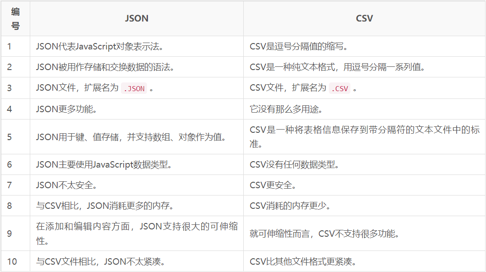

Contents
JSON 与 XML 的相同之处：
JSON 与 XML 的不同之处：

## 为什么使用大写命名法
## os.path.relpath
# Python program to explain os.path.relpath() method
# importing os module
import os
# Path
path = "/home / User / Desktop / file.txt"
# Path of Start directory
start = "/home / User"
# Compute the relative file path
# to the given path from the
# the given start directory.
relative_path = os.path.relpath(path, start)
# Print the relative file path
# to the given path from the
# the given start directory.
print(relative_path)
实例：
temp_str = 'this is a test'
print(temp_str.replace('is','IS'))
print(temp_str)
结果为：
# thIS IS a test
# this is a test
s[i:j] = t
slice of s from i to j is replaced by the contents of the iterable t
--- Growing, Growing, Brighter Everyday ! ---